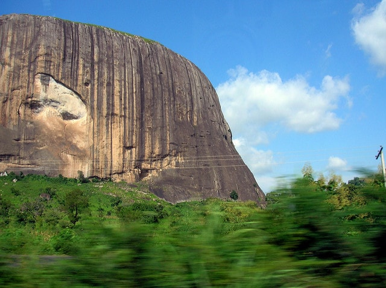
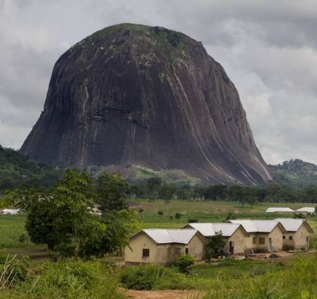
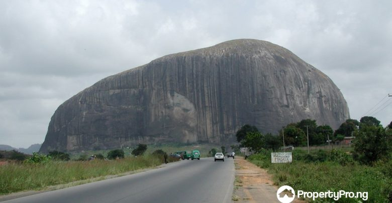
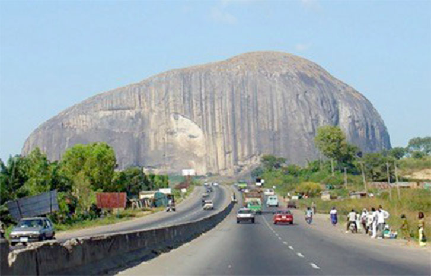
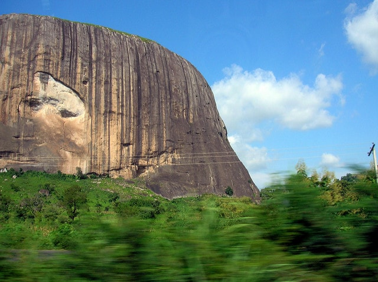
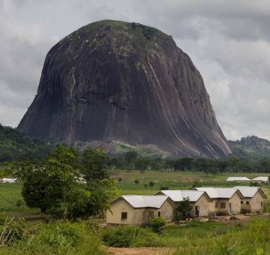
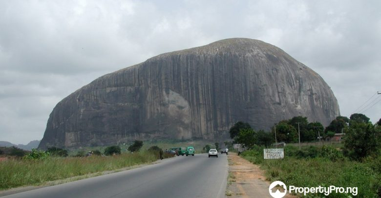
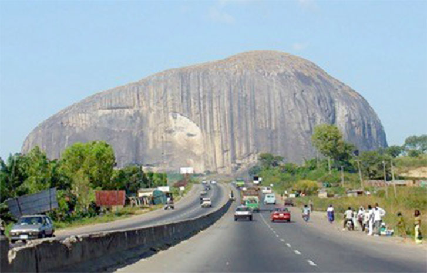

Welcome to Zuma Rock
State located: Abuja

About Zuma Rock:
Zuma Rock is a large natural monolith, an igneous intrusion composed of gabbro and granodiorite, in Niger State, Nigeria. It is located immediately west of Nigeria's capital Abuja, along the main road from Abuja to Kaduna off Madala, and is sometimes referred to as the "Gateway to Abuja from Suleja".[1] Zuma Rock rises approx. 300 metres (980 ft) above its surroundings. Zuma Rock is depicted on the 100 naira note. It was used for a defensive retreat by the Gbagyi people against invading neighbouring tribes during intertribal warring. Zuma Rock is one of the top tourist attractions in Nigeria. Rising imposingly from the flat topography of the surrounding area, this colossal granite monolith is hard to miss, with its position towering above the long highway into Abuja. This Nigerian landmark is a must-see on any trip to nearby capital Abuja, and is visible from anywhere in the city. Known as the 'Gateway to Abuja', Zuma Rock is located in central Niger State. There is a place to eat and drink at the rock and there is also light entertainment to pass the moment and solitude.
Special Attractions and Fun Facts:
-
A rock with facial features
Yes you read right! Zuma Rock has natural contours on the surface which depict the image of a human face with a visible mouth, eyes, and nose. The natives of the community believe the face represents the deity and ancestral powers protecting and governing the affairs of the community. The Gwari people also acknowledge the rock as a gateway for the after life, It is believed that when people die, their spirits go to the rock.
-
The rock catches fire during the rainy season
The rainy season in Nigeria between April and October comes with another myth surrounding Zuma Rock – it is reported that the apex of the rock often catches fire. Natives attest the happenings to the wonders of the deities and voodoo spells. However, scientists object to the belief. Dr. Kistso Ngargbu, a geologist and lecturer at Nasarawa State University,Keffi, notes that: “If it is after rainfall and a particular boulder or broken pieces of the rock got saturated with water, that’s the contact between heat and the main rock body. In the event that it had to slide because water now serves as a lubricating surface, friction is created. We should remember that our forefathers used to make fire from rocks glided against each other. That is what could have happened. Rain water got to the surface, lubricated the boulder and then generated a sliding probably based on a sloppy surface, and in the event of sliding down the fire came up”.
-
It served as a hideout against external forces
There is no precise account pertaining to the origin of the rock, however, Zuma Rock is said to have been first located in a thick forest by the people of Zuba in the 15th century upon the instruction of their soothsayer. The Zuba people named the rock, “Zumwa”, which means “the place of catching guineafowls” upon finding out that there were many within the forest. At their arrival in the forest, they settled around it and constructed settlements, and later discovered the spiritual representation of the rock as a powerful deity. They turned to worshipping and offering sacrifices to the rock to protect them and keep them safe from evil. Over time, the people of Gwari used the rock as a defense and hideout against invading neighboring tribes and external forces.
-
It protects against a disastrous outburst
Another yet interesting myth suggests that the Zuma Rock sits on a very large expanse of underground water. it is believed that if the rock is pulled down, there will be an outburst of water which will submerge an unimaginable land area.
-
Zuma Rock features on Nigeria’s 100 Naira currency banknote
It is twice as high as the Uluru Rock in Australia – it is also higher than the height of Nigeria’s popular Aso Rock and Olumo Rock put together, and more than four times as high as Nigeria’s tallest building, NECOM House.
Packages
Entrance fee:No entry fee!!!
More Images
 






